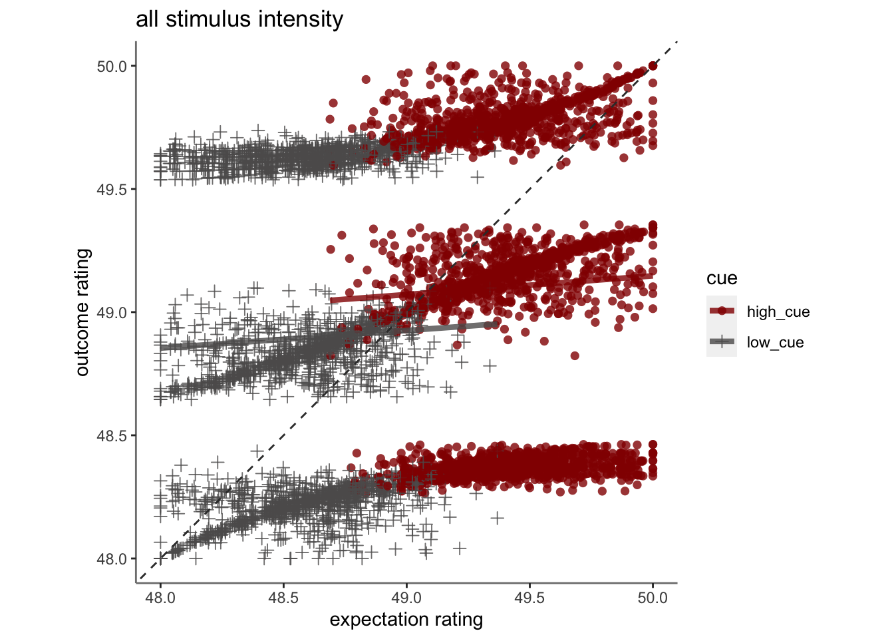
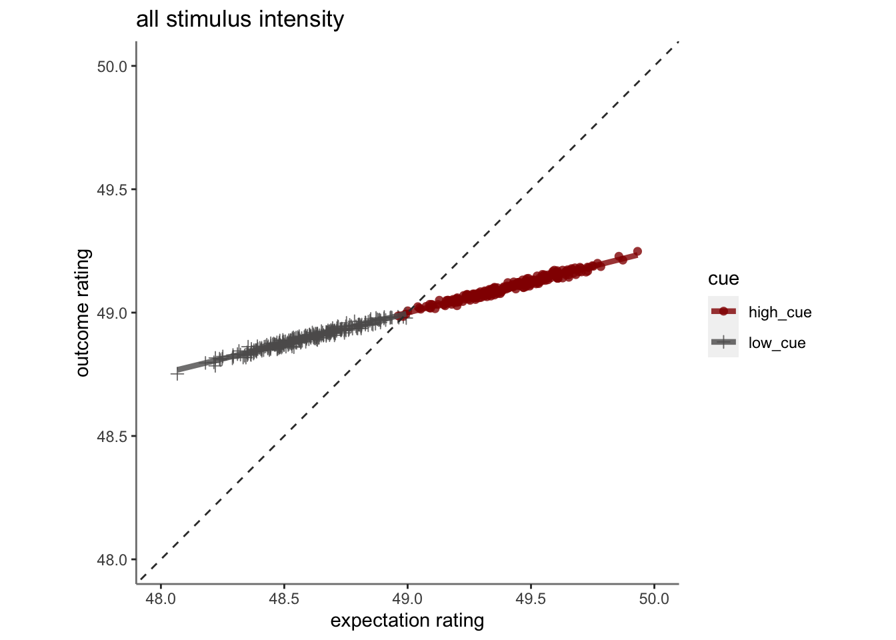
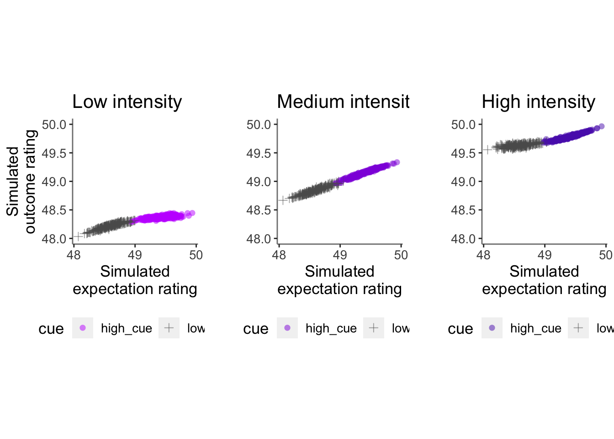

Chapter 10 [beh] RL simulation
What is the purpose of this notebook?
- Here, Aryan simulated behavioral outcome ratings using a reinforcement learning model.
10.1 function
Code
# summarize dataframe __________________________________________________________
plot_twovariable <- function(df, iv1, iv2, group, subject, xmin, xmax, ymin,ymax,
xlab, ylab, ggtitle, color_scheme, alpha, fit_lm, lm_method = NULL, identity_line=TRUE, size=NULL) {
# x: iv1 e.g. expect rating
# y: iv2 e.g. outcome rating
# group: param_cue_type
# subject: src_subject_id
# xlab("expect rating") +
# ylab("outcome rating") +
# color_scheme = c("high_cue" = "#000000",low_cue" = "#BBBBBB" )
library(ggplot2)
df_dropna <- df[!is.na(df[, iv1]) & !is.na(df[, iv2]), ]
subjectwise_naomit_2dv <- meanSummary_2dv(
df_dropna,
c(subject, group),
iv1, iv2
)
# subjectwise_naomit_2dv <- na.omit(subjectwise_2dv)
subjectwise_naomit_2dv[ , group] <- as.factor(subjectwise_naomit_2dv[, group])
# plot _________________________________________________________________________ #nolint
g <- ggplot(
data = subjectwise_naomit_2dv,
aes(
x = .data[["DV1_mean_per_sub"]],
y = .data[["DV2_mean_per_sub"]],
color = .data[[group]],
size = size
)
) +
geom_point(
aes(shape = .data[[group]],
color = .data[[group]]),
size = 2,
alpha = alpha) +
theme(aspect.ratio = 1) +
scale_color_manual(values = color_scheme) +
scale_shape_manual(values = c(16, 3)) +
xlab(xlab) +
ylab(ylab) +
ylim(ymin,ymax) +
xlim(xmin,xmax) +
ggtitle(ggtitle) +
theme(
axis.line = element_line(colour = "grey50"),
panel.background = element_blank(),
plot.subtitle = ggtext::element_textbox_simple(size = 11)
)
if (isTRUE(fit_lm)) {
g <- g +
# geom_ribbon(stat = "smooth", method = lm_method, se = FALSE, alpha = 0.1,
# aes(color = NULL, group = factor(group))) +
geom_line(stat = "smooth", method = lm_method, se = FALSE, alpha = 0.8, linewidth = 1.5)
} else {
g
}
if (isTRUE(identity_line)) {
g <- g + geom_abline(
intercept = 0, slope = 1, color = "#373737", # color = "green"
linetype = "dashed",
linewidth = .5
)
} else {
g
}
return(g)
}plot data
Code
group = "cue"
iv1 = "demean_expect"
iv2 = "demean_outcome"
subject = "sub"
xmin=48; xmax=50; ymin=48; ymax=50
xlab = "expectation rating"
ylab = "outcome rating"
ggtitle = "all stimulus intensity"
color_scheme = c("high_cue" ="#941100","low_cue" = "#5D5C5C")
alpha = .8; fit_lm = TRUE; lm_method = "lm"; identity_line=TRUE; size=NULL
g <- ggplot(
data = merged_df,
aes(
x = .data[["expectation"]],
y = .data[["outcome"]],
color = .data[[group]],
size = size
)
) +
geom_point(
aes(shape = .data[[group]],
color = .data[[group]]),
size = 2,
alpha = alpha) +
theme(aspect.ratio = 1) +
scale_color_manual(values = color_scheme) +
scale_shape_manual(values = c(16, 3)) +
xlab(xlab) +
ylab(ylab) +
ylim(ymin,ymax) +
xlim(xmin,xmax) +
ggtitle(ggtitle) +
theme(
axis.line = element_line(colour = "grey50"),
panel.background = element_blank(),
plot.subtitle = ggtext::element_textbox_simple(size = 11)
)
if (isTRUE(fit_lm)) {
g <- g +
# geom_ribbon(stat = "smooth", method = lm_method, se = FALSE, alpha = 0.1,
# aes(color = NULL, group = factor(group))) +
geom_line(stat = "smooth", method = lm_method, se = FALSE, alpha = 0.8, linewidth = 1.5)
} else {
g
}
if (isTRUE(identity_line)) {
g <- g + geom_abline(
intercept = 0, slope = 1, color = "#373737", # color = "green"
linetype = "dashed",
linewidth = .5
)
} else {
g
}
g## Warning: Using `size` aesthetic for lines was deprecated in ggplot2 3.4.0.
## ℹ Please use `linewidth` instead.
## This warning is displayed once every 8 hours.
## Call `lifecycle::last_lifecycle_warnings()` to see where this warning was
## generated.## `geom_smooth()` using formula = 'y ~ x'
 